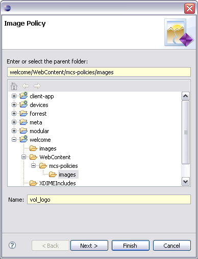
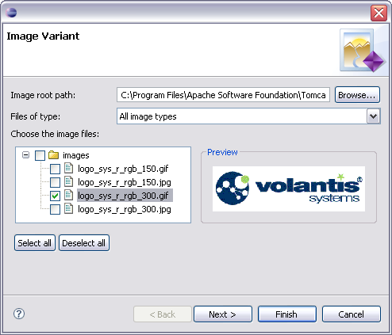
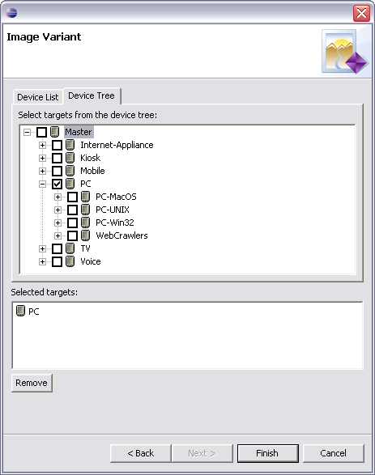
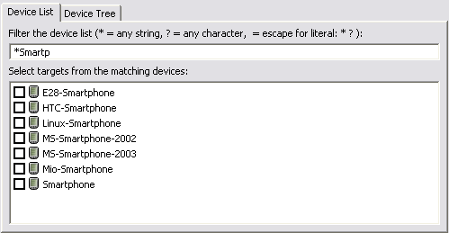

Adding an image component
Now you will see how we added an image component for the Volantis logo to the project,
created an image variant, and associated it with a standard device family.
All the image files are located in the welcome/images directory. The
image component policies are in the
welcome/WebContent/mcs-policies/images directory.
Adding a component 
- Choose File | New | Image
Component
- Select the welcome/WebContent/mcs-policies/images folder in the
Navigator view, and enter 'vol_logo' as the component name. MCS will automatically append the
.mimg image component policy file extension when the file is created.
- Click the Next button

Adding a variant
- Use the Browse button to locate welcome/images
folder as the Image root path
- Select 'GIF(*.gif)' from the Files of type list to filter the list,
and choose logo_sys_r_rgb_300.gif from the images/PC
directory. To preview the variant, select the filename.
- Check the box next to the filename to select it, and click the Next
button. You should choose no more than one variant to enable the Next
button and target devices at this time.

Choosing a device
Most component variants are device specific. They can be targeted at a particular device or
device family. MCS searches the repository for a variant which is targeted at the device
currently in use. If there is no exact match, MCS searches for variants that match the parent
of the current device in the device tree. This search continues up the hierarchy until either
a variant is found, or MCS reaches the root of the device tree.
- On the next page of the wizard choose 'Targeted' in the Selection
criteria box, and click the Next button

- Go to the Device Tree tab and expand the 'Master' tree to find 'PC'
devices. Check the box next to the device to select it, and click the
Finish button.

- MCS displays the Image Component Editor. Select the PC variant in the
Variants section to display the related attributes.
Adding the Smartphone variant
Now we will add a logo variant for Smartphone devices to the existing policy.
- In the policy editor click the New button located below the Variants
section to open the wizard
- This time choose logo_sys_r_rgb_150.gif from the
images directory
- Click the Next button
- On the next page of the wizard pick the 'Targeted' and click Next
- On the Device List tab type '*Smartphone' in the top text box to
filter list of available devices. The list of matched devices is updated as you type.

- Check the 'Smartphone' box and click Finish. The new variant is listed
in the Variants section.